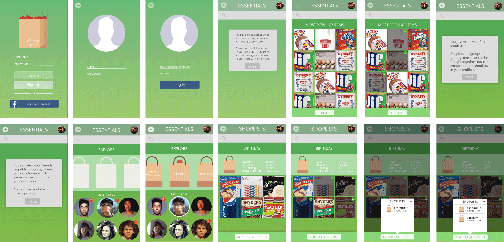

Cultural Probes —
We sent out cultural probes (titled “MarKit”) to five university students — some undergraduate, some graduate. Each probe consisted of five activities ranging from sending food-related Snapchats to us to writing down their shopping lists and comparing them to their final receipts. These activities were designed specifically for us gain insight on people’s thoughts on their shopping experiences, as well as to look closer into their (un)intentional shopping habits. A week after sending them out, we got the probes back and began to analyze the results.

Generative Workshop —
Following the cultural probe activities, we held a generative workshop with three other students to gauge a sense of what they prioritize while shopping. Our activities included having them choose from a list of grocery items given a limited budget, and writing down their “routine” before, during, and after the act of grocery shopping.

Affinity Clustering —
Based on the results from the cultural probes and generative workshop, we wrote down quick notes of each completed activity and then grouped them together in clusters to take note of any patterns we noticed. From our affinity clustering, we noticed that the stores people had more favorable experiences in had much more natural and personal environments (i.e. Trader Joe’s, Whole Foods). From there, we decided to explore the idea of creating a personal experience for shoppers more through the creation of our app.

Visual Development —
We agreed to focus on creating a personalized experience for the user to make them feel more comfortable with the idea of grocery shopping. Part of our mission was also to introduce the idea of having grocery shopping be a social activity rather than an individual one.
Cherry Pick allows people to create shopping lists for each and every occasion, such as fancy Friday nights or extravagant birthday parties. Shopping lists are viewable by one's friends, who can then choose to create their own lists by “cherry picking” items that they notice. This creates a more organized experience for one’s own grocery shopping, while also allowing for shopping and event inspiration from one’s social circles.
